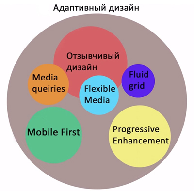

Неделя 10 - Адаптивность
День 1. Допилка сайта.
Сегодня делали наш сайт. На котором будем проводить опыты над анимацией и flexbox.
Ссылка на сайт: MySite
Заключение:
В этом дне начали верстать прямо из PSD макета.
А завтра начнём уже проводить полевые учения с flexbox на примере анонсов статей.
День 2. Flex на практике.
Сегодня делали наш сайт.На котором будем проводить опыты над анимацией и flexbox
Ссылка на сайт: MySite
Заключение:
Сегодня наконец то попробовали flex на практике. Оказалось просто, интересно и занимательно.
День 3. Адаптация
Aдаптивный дизайн держится на трех китах: отзывчивом дизайне (Responsive design), Progressive Enhancement и Mobile first.
- Отзывчивый дизайн - складывается из таких понятий , как:
- Fluid grid - Гибкая, или модульная сетка
- Flexible Media - (гибкие медиа)- изображения, видео , флеш-вставки и т.д
- Media queiries - медиа-запросы
Progressive Enhancement и Graceful degradation
Под Progressive Enhancement подразумевается постепенное улучшение, когда верстка проекта начинается с самого простого к более сложному, современному, чтобы сайт мог корректно отображаться при помощи самого старого, но еще используемого браузера.
Подход к началу верстки проектов — есть главное отличие этой технологии от другой, совершенно противоположной — Graceful degradation (изящная деградация). При такой верстке разработка проектов идет от самого сложного. навороченного к простому.
@media - это правило, которое указывает стили, которые будут использоваться для определенного устройства или при определенных ситуациях.
@media-screen - указывает стили, которые надо использовать в зависимости от ширины экрана.
Если ширина меньше чем значение
@media-screen and (max-width:значение) - стили применяются, если ширина экрана меньше, чем указанное значение.
//Если ширина окна браузера меньше, чем 1224 пикселя, то к блоку main добавляются отступы по бокам в 20 пикселей
@media screen and (max-width:1224px){
div.main{margin: 0 20px;
}
}
Если ширина экрана больше чем значение
@media screen and (min-width: значение)
//Если ширина экрана меньше 800px-текст заголовка перемещается влево.
@media screen and (min-width:800px) {
.head h3 {
text-align: left;
}
}
Ширина находится в определенном диапазоне
@media screen and (max-width:значение1) and (max-width:значение2) - стили применяются, если ширина окна браузера находится в пределах значения1 и значения2.
//Когда ширина экрана браузера больше 879 и меньше 1051px- меняется направление главной оси в блоке anonse.
@media screen and (min-width:880px) and (max-width:1050px) {
.anonse {
flex-direction: column;
}
}
Заключение:
Сегодня познакомились с адаптивной версткой. Пока всё доступно!
День 4. Хитрости адаптации.
Контроль через 1 блок - старайтесь для контролирования ширины сайта всегда использовать 1 блок.
max-width и min-width - задавайте контрольному блоку ширину при помощи именно этих свойств.
Для дочерних элементов контрольного блока всегда старайтесь использовать относительную ширину, что бы они сужались автоматически, в зависимости от ширины родителей (можно задавать ширину в процентах).
Заключение:
Сегодня познакомились с первыми свойствами для flex-элементов.
Дурдом!!! Б-р-р-р...
День 5. Косяки и трюки
Заключение: